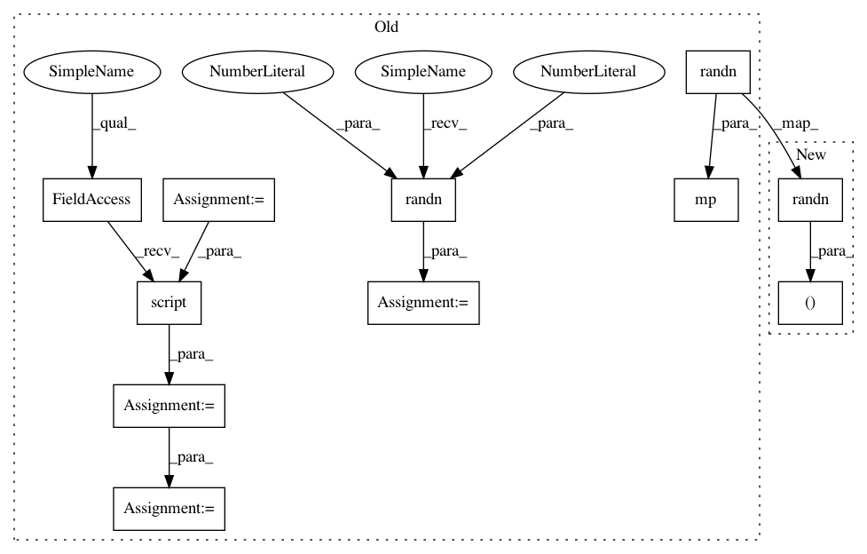

986e3c0a00677355c1edbd89a959264fa0aea1c4,test/quantization/test_numeric_suite_fx.py,TestFXNumericSuiteCoreAPIs,test_match_activations_mod,#TestFXNumericSuiteCoreAPIs#,757
Before Change
nn.Conv2d(1, 1, 1),
).eval()
mp = prepare_fx(m, {"": torch.quantization.default_qconfig})
mp(torch.randn(2, 1, 2, 2))
// TODO(future PR): prevent the need for copying here, we can copy the
// modules but should reuse the underlying tensors
mp_copy = copy.deepcopy(mp)
mq = convert_fx(mp_copy)
mp_ns, mq_ns = add_loggers(
"fp32_prepared", mp, "int8", mq, OutputLogger)
expected_occurrence = {
ns.call_module(OutputLogger): 2,
}
self.checkGraphModuleNodes(
mp_ns, expected_node_occurrence=expected_occurrence)
self.checkGraphModuleNodes(
mq_ns, expected_node_occurrence=expected_occurrence)
// TODO(before land): test both scripted and non-scripted
mp_ns = torch.jit.script(mp_ns)
mq_ns = torch.jit.script(mq_ns)
// calibrate
input_fp32 = torch.randn(2, 1, 2, 2)
mp_ns(input_fp32)
mq_ns(input_fp32)
// check activation result correctness
act_compare_dict = extract_logger_info(mp_ns, mq_ns, OutputLogger)
self.assertTrue(len(act_compare_dict) == 2)
self.assert_ns_compare_dict_valid(act_compare_dict)
@override_qengines
After Change
ns.call_module(OutputLogger): 2,
}
self._test_match_activations(
m, (torch.randn(2, 1, 2, 2),),
prepared_expected_node_occurrence=expected_occurrence,
results_len=2)
In pattern: SUPERPATTERN
Frequency: 4
Non-data size: 11
Instances
Project Name: pytorch/pytorch
Commit Name: 986e3c0a00677355c1edbd89a959264fa0aea1c4
Time: 2021-03-12
Author: vasiliy@fb.com
File Name: test/quantization/test_numeric_suite_fx.py
Class Name: TestFXNumericSuiteCoreAPIs
Method Name: test_match_activations_mod
Project Name: pytorch/pytorch
Commit Name: 986e3c0a00677355c1edbd89a959264fa0aea1c4
Time: 2021-03-12
Author: vasiliy@fb.com
File Name: test/quantization/test_numeric_suite_fx.py
Class Name: TestFXNumericSuiteCoreAPIs
Method Name: test_add_shadow_loggers_fun
Project Name: pytorch/pytorch
Commit Name: 986e3c0a00677355c1edbd89a959264fa0aea1c4
Time: 2021-03-12
Author: vasiliy@fb.com
File Name: test/quantization/test_numeric_suite_fx.py
Class Name: TestFXNumericSuiteCoreAPIs
Method Name: test_add_shadow_loggers_mod
Project Name: pytorch/pytorch
Commit Name: 986e3c0a00677355c1edbd89a959264fa0aea1c4
Time: 2021-03-12
Author: vasiliy@fb.com
File Name: test/quantization/test_numeric_suite_fx.py
Class Name: TestFXNumericSuiteCoreAPIs
Method Name: test_match_activations_fun
Project Name: pytorch/pytorch
Commit Name: 986e3c0a00677355c1edbd89a959264fa0aea1c4
Time: 2021-03-12
Author: vasiliy@fb.com
File Name: test/quantization/test_numeric_suite_fx.py
Class Name: TestFXNumericSuiteCoreAPIs
Method Name: test_match_activations_mod